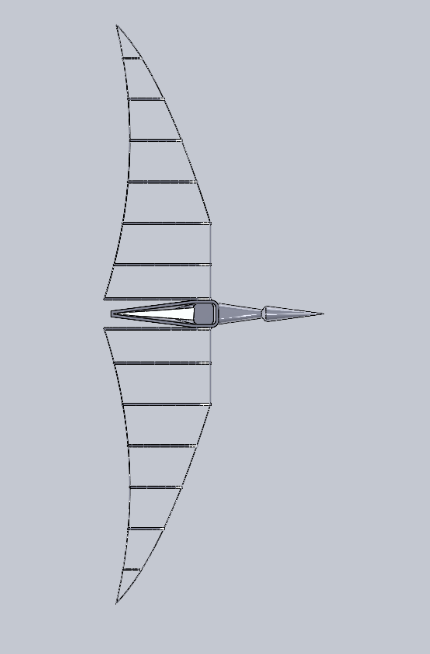

Define the wing
Use the early glider CAD to establish the overall concept and identify airfoil profiles for further study.
Exploring how prehistoric wing shapes can inform the design of lightweight, low-power gliding systems.

This project pairs a bio-inspired glider concept with aerodynamic analysis to understand how wing sections might perform at the low flight speeds relevant to a lightweight glider.
Lightweight gliders can operate with little or no propulsion, making efficient wing design important for applications such as environmental monitoring and robotic exploration. This project investigates whether wing shapes inspired by Rhamphorhynchus muensteri, a Jurassic pterosaur, can inform the design of a small static glider. I prepare and analyze candidate airfoil profiles using XFOIL and XFLR5, comparing lift, drag, aerodynamic efficiency, and predicted stall behavior at low Reynolds numbers. These computational analyses provide a basis for evaluating candidate wing sections and selecting operating conditions. The project is ongoing; the final wing design and complete glider performance have not yet been experimentally validated. The next stages will use these findings to guide three-dimensional analysis and physical evaluation.
The design starts with a pterosaur-inspired planform, then evaluates the aerodynamic performance of its candidate airfoil sections before committing to a final wing configuration.
Use the early glider CAD to establish the overall concept and identify airfoil profiles for further study.
Simulate lift and drag over a range of angles of attack at low Reynolds numbers using XFOIL/XFLR5.
Assess the tradeoffs among efficient cruise, adequate lift, and operation near stall to guide wing selection.
The current simulations assess two-dimensional airfoil sections. A complete glider will also depend on wing planform, three-dimensional effects, stability, structure, and launch conditions.
The initial analyses are being used to compare candidate airfoils and identify promising operating ranges. The figure below demonstrates how a lift-coefficient plot could appear on this page. It is not one of my measured or computed research results.
assets/projects/pterosaur-lift-plot.png to replace the illustration automatically. Label your real plot with the airfoil names, Reynolds numbers, and analysis conditions.Does the profile produce sufficient lift near the intended operating condition?
How does the lift-to-drag ratio compare among candidate profiles?
How sensitive is the profile to increasing angle of attack near its lift peak?
Which conclusions still need 3D modeling or experimental testing?
The preliminary airfoil study offers a way to narrow design choices before committing to a full glider configuration. My next steps are to finalize the airfoil comparison, incorporate the selected sections into a three-dimensional wing model, and evaluate the glider's overall aerodynamic behavior. Physical testing will be necessary to determine how closely the computational predictions match actual performance.
One key lesson from this work is that maximizing lift alone is not enough: the most useful airfoil must also provide appropriate drag characteristics and a practical operating range for the intended flight conditions.